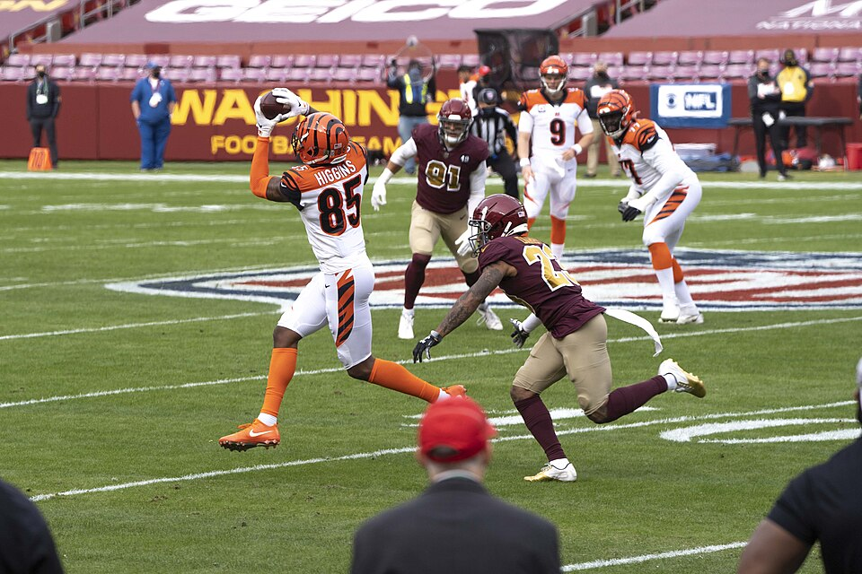

TheSoop goes to first on the best per-game roster in the league and ceefry drops a place while still leading the table. OneManEra rises three after six straight results won, and evspade falls three.